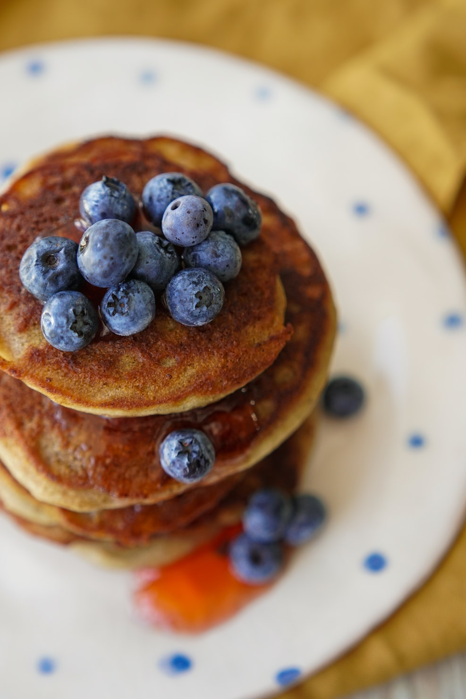
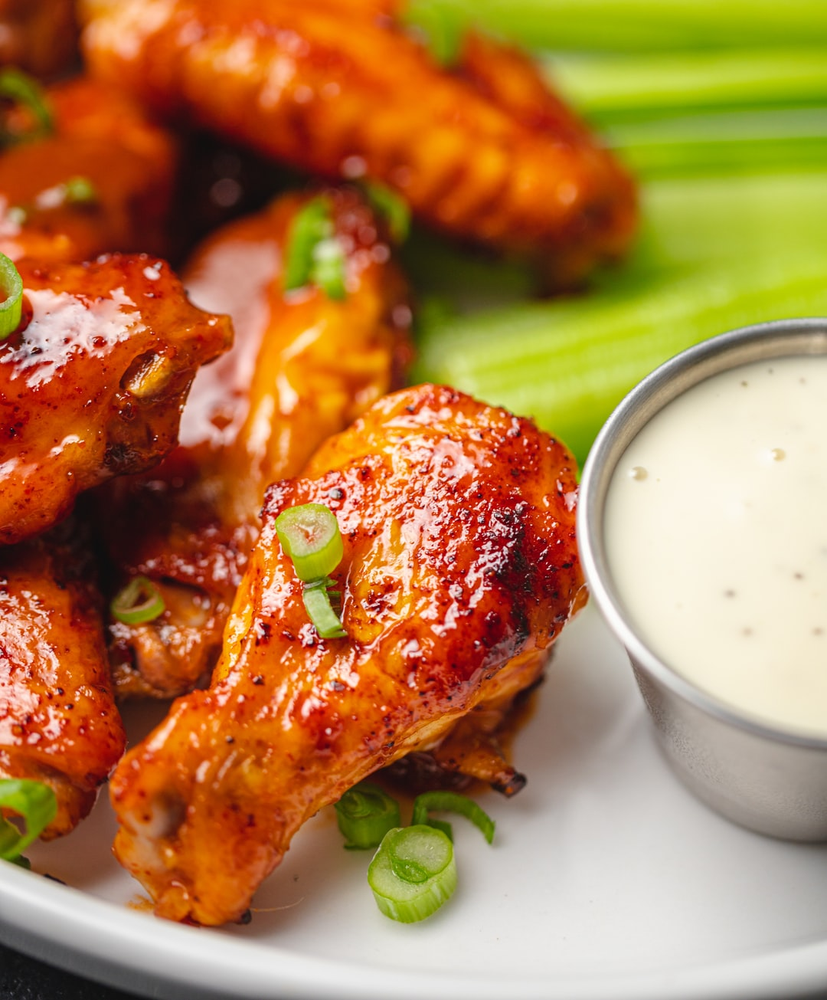

About Recipes Baking-Tips
Recipes
Categories
Breakfast
Apple Oatmeal
Serves 4
Preparation time: 5 minutes
Cooking time: 15 minutes
Ingredients:
- 2 1/2 cups skim milk
- 1 cup water
- 1 1/3 cups large flake oats
- 1/3 cup wheat germ
- 2 tbsp brown sugar
- 1 tsp ground cinnamon
- 1 medium apple, cored and diced
- 2 tbsp dried cranberries (optional)
- Honey (optional)
Instructions
- In a saucepan, bring milk and water to a gentle boil over medium-high heat.
- Stir in oats and wheat germ. Reduce heat to medium-low heat; stir in sugar and cinnamon.
- Cook, stirring for about 12 minutes or until almost thickened.
- Remove from heat and stir in apple and cranberries, if using. Cover and let stand for 5 minutes before serving. You can drizzle honey over the finished oatmeal for a sweeter breakfast!

Banana and Blueberry Pancakes
Serves 4
Preparation time: 5 minutes
Cooking time: 15 minutes
Special Equipment:
- A greased griddle or skillet
Ingredients:
- 1 cup whole wheat flour
- 1/2 cups all-purpose flour, sifted
- 1 large banana, mashed
- 2 cup fresh blueberries
- 1 tbsp sugar
- 2 tsp baking powder
- Pinch of cinnamon
- 1 1/2 cups skim milk
- 1 egg
- 1 tsp vanilla extract
Instructions
- In a large bowl, whisk both whole wheat and all-purpose flours, sugar and baking powder together.
- In another bowl, whisk together milk with egg, mashed banana, cinnamon and vanilla. Pour over the flour mixture and stir until well blended and smooth. Fold in the blueberries.
- Spray a griddle or nonstick skillet lightly with cooking spray. Heat over medium heat. Pour 1/4 cup of batter onto a hot griddle for each pancake. Cook until bubbles start to appear on top (about 2 minutes). Flip over and cook until golden brown. Repeat with remaining batter.
- You can serve the pancakes immediately with additional fruits, and store them in the freezer for up to 2 weeks.
Frittatas
Have any extra vegetables clogging up your fridge and drawers? This easy to prepare and store recipe will gladly help you clean out. A meat-less, nutritious and savory meal, these frittatas can easily be served as breakfast, lunch and dinner.
Serves 6
Preparation time: 10 minutes
Cooking time: 25 minutes
Special Equipment
- 10in large, oven-safe skillet
Ingredients:
- 6 eggs
- 1/3 cup skim milk
- 1/2 tsp salt
- 1/2 tsp pepper
- 1 tbsp olive oil
- 1/2 small onion, chopped
- 1/2 cup of zucchini, finely chopped
- 2 tomatoes, finely chopped
- 2 small potatoes, peeled and sliced
- 1 tsp dried basil
- 1/2 cup low fat mozzarella cheese, grated
Instructions
- Preheat the oven to 350°F(180°C) for the baked casserole.
- Crack the eggs into a mixing bowl. Add milk and salt. Whisk just until the egg yolks and whites are blended. Whisk in cheese then set the mixture aside.
- In a large skillet, warm the olive oil over medium heat until shimmering.
- Add the vegetables, starting with chopped onions. Cook for a few minutes, stirring occasionally, then add the tomatoes, potatoes, and zucchini. Cook until vegetables are tender. You may add extra garnish, salt and cheese before serving.
Lunch
Mac and Cheese
This vegetarian spin on Mac and cheese is packed with fiber, vitamins and minerals! With an assortment of tender veggies, runny cheese and chewy pasta, this tantalizing meal will surely meet any family’s standards!
Serves 4
Preparation time: 20 minutes
Cooking time: 20 minutes
Ingredients:
- 1 1/2 cups whole grain macaroni
- 1 small onion, finely chopped
- 2 cloves garlic, minced
- 1 carrot, finely chopped
- 3/4 cup tomatoes, crushed
- 1/2 cup bell pepper, finely chopped
- 1/2 cup grated zucchini
- 2 tbsp all-purpose flour
- 2 cups skim milk
- 1 tsp thyme, chopped
- 1 cup shredded light cheddar cheese
Instructions
- In a pot, bring water to boil. Add macaroni and cook for about 6 minutes or until pasta is tender but firm. Drain well and set aside.
- In a large saucepan, heat margarine over medium heat and cook onion and garlic for 1 minute. Add carrot, pepper, tomato and zucchini and cook, stirring for about 5 minutes until softened.
- Stir in flour and cook, stirring until flour is absorbed. Slowly pour in milk and stir until smooth.
- Add thyme then cook while stirring for about 5 minutes or until it starts to bubble. Stir in cheese, then remove from heat and stir until melted and smooth. Stir in cooked macaroni until well coated.
- Serve immediately.
Honey Garlic Shrimp with Vegetables
Sweet, spicy and fit for a whole crowd, this shrimp appetizer is amazing simply by itself, and makes for a hearty meal when served with brown rice and steamed vegetables.
Serves 4
Preparation time: 20 minutes
Cooking time: 5 minutes
Special Equipment
Ingredients:
(Shrimp and marinade)
- 1/3 cup honey
- 1/4 cup soy sauce
- 1/4 tsp red pepper flakes
- 1/4 tsp black pepper
- 2 garlic cloves, minced
- 1-lb medium uncooked shrimp, shelled & deveined
- 1/4 cup chicken broth
- Green onion, chopped (optional garnish)
(Side vegetables)
- 1 cup of broccoli florets
- 2 carrots, chopped
Instructions
- In a bowl, whisk together honey, soy sauce, chicken broth, garlic, black pepper and red pepper flakes. Add shrimp and toss to coat. Set aside and marinate for 20 minutes.
- While marinating, place the broccoli and carrots into a steamer till tender (5 minutes)
- Cook shrimp on one side in a skillet over medium heat till pink (about 45 seconds), then flip shrimp and cook all the way through (2-3 minutes)
- Plate the marinated shrimp with steamed veggies – serve while hot!

Oven-baked Drumsticks
Juicy and savory, these spicy drumsticks taste excellent in the summer and are very versatile – they can be paired with practically any sides! For me, I enjoy eating chicken legs with coleslaw for extra crunch and tangy flavor.
Special Equipment:
- 12 x 17in baking sheet
- Food processor (coleslaw)
Ingredients:
(Drumsticks)
- 10 skinless chicken drumsticks
- 2 tbsp olive oil
- Lemon juice
- 2 tsp garlic powder
- 2 tsp onion powder
- 2 tsp salt
- 1/4 cup soy sauce
- 1/4 cup brown sugar
- 1 tsp black pepper
- 1 tsp paprika
(Coleslaw)
- 1 medium green cabbage, sliced
- 2 carrots, sliced
- 1 red onion, sliced
- 1/2 cup cherry tomatoes, sliced
- 1 cup mayonnaise
- 2 tbsp heavy cream
- 2 tsp yellow mustard
- 2 tsp garlic salt
- 2 tsp black pepper
- 2 tsp chives
- 1 tsp celery seed
Instructions
- Preheat the oven to 425°F(220°C). Line a baking sheet with foil and spray with cooking spray.
- In a medium bowl whisk together the olive oil, lemon juice, garlic powder, onion powder, salt, soy sauce, brown sugar, pepper, and paprika.
- Add the chicken drumsticks to a large zip-top bag and pour the marinade over the chicken. Close the bag and massage the marinade into the chicken for a few seconds.
- Refrigerate the chicken in the marinade for at least 30 minutes. For best flavor allow the chicken to marinate for 2-12 hours.
- Arrange the chicken in an even layer on prepared baking sheet and bake in the preheated oven for 40-45 minutes. Bake the drumsticks until fully cooked, and use a thermometer to ensure the chicken reaches at least 165°F(74°C).
- While the chicken is baking, add the sliced cabbage, carrots, onion, and tomatoes to a food processor fitted with the blade attachment and pulse until they become small chunks. Remove from the food processor and add to a mixing bowl.
- Add the mayonnaise, heavy cream, mustard, garlic salt, pepper, celery seed and chives to a small bowl and whisk together until smooth.
- Pour the coleslaw dressing over the coleslaw mix and stir to combine.
- Serve drumsticks and coleslaw immediately.
Dinner
Salmon with Brown Rice and Vegetables
An excellent source of omega 3 and 6 fatty acids, this meal helps to reduce inflammation and bad cholesterol, leaving you and your body feeling refreshed. This quick dinner recipe is high in protein, fiber, and carbohydrates – increasing your satiety in no time!
Serves 2-4
Preparation time: 10 minutes
Cooking time: 20 minutes
Ingredients:
- 2-4 salmon fillets (8 ounces each)
- 1 cup green beans
- 4 lemon slices
- 2 stalks of thyme
- 1 head broccoli, rinsed and cut
- 2 cups brown rice, rinsed
- 4 1/2 cups vegetable stock
- 1 cup of cucumber and carrots, finely chopped
- 1 tbsp soy sauce
- 1 tbsp apple cider vinegar
- 1 tbsp olive oil
- Salt and pepper
Instructions
- Place the salmon fillets into your steamer and sprinkle with salt and pepper.
- Place the lemon slices, fresh thyme onto the salmon fillets. When using several salmon fillets, be sure to use extra thyme stalks.
- Place the rice into your rice cooker. If your rice cooker does not have a steamer basket, you will need to steam the salmon and broccoli separately in a steamer.
- Surround the salmon fillets with the broccoli and green beans.
- Pour the vegetable stock into the rice cooker and place the steamer basket on top.
- Close the lid and cook the rice and steam the salmon at the same time. By the time the rice is done, the salmon will be ready too.
- While the rice and salmon are cooking, combine the finely chopped cucumber and carrots into a small bowl. Add the soy sauce, apple cider vinegar and olive oil and mix till combined.
- Serve the salmon with rice and broccoli along with the cucumber and carrot mix.
Shepherd’s Pie
You do not need to follow this recipe to a T. you can add your own favorite vegetables, spices, and seasoning!
Serves 4
Preparation time: 15 minutes
Cooking time: 50 minutes
Special Equipment
- 9 x 13in casserole dish (preferably ceramic or metal)
Ingredients:
- 3 large potatoes, peeled and quartered
- 8 tbsp (1/2 cup) butter
- 1 medium onion, chopped
- 3 cups vegetables (I use 2 carrots, 1 cup of corn, and 1 cup of peas in this recipe)
- 1 1/2 pounds ground lamb
- 1/4 cup tomato paste
- 1/2 cup chicken broth
- 1 teaspoon Worcestershire sauce
- Salt, pepper, other seasonings of choice
- Low fat mozzarella cheese, grated
Instructions:
- Preheat oven to 400°F(205°C).
- Place the peeled and quartered potatoes in a pot. Cover with at least an inch of cold water. Add a teaspoon of salt. Bring to a boil, reduce to a simmer, and cook until tender (about 20 minutes)
- While the potatoes are cooking, melt 4 tablespoons of the butter in a large sauté pan on medium heat. Add the chopped onions and cook until tender (6-10 minutes). Add vegetables according to their cooking time (Carrots should be cooked with the onions. Peas and corn should be added toward the end of the cooking of the onions, or after the meat starts to cook).
- Add ground beef to the pan with the onions and vegetables. Cook until no longer pink and water has evaporated (5-10 minutes). Stir in tomato paste, cook for a few minutes, and season with salt and pepper.
- Add the Worcestershire sauce and beef broth. Bring broth to a simmer and reduce heat to low. Cook uncovered for 10 minutes, adding more beef broth if necessary to keep the meat from drying out.
- When the potatoes are done, remove them from the pot and place them in a bowl with the remaining 4 tablespoons of butter. Mash with a fork or potato masher, and season with salt and pepper to taste.
- Spread the beef, onions, and vegetables in an even layer in a large casserole dish.
- Spread mashed potatoes over the ground beef. Rough up the surface of the mashed potatoes with a fork so there are peaks that will get well browned. You may sprinkle grated cheese over the mashed potatoes.
- Place the casserole dish in the oven and cook until browned and bubbling (30 minutes). If necessary, broil for the last few minutes to brown the surface of mashed potatoes.
- Let cool for at least 20 minutes before serving.
Beef and Pea Rotini
This hearty meal provides carbohydrates, protein, and fiber. I suggest using whole grain pasta for extra fiber, and adding mozzarella cheese in the pasta for a more creamy and savory taste!
Serves 4
Preparation time: 10 minutes
Cooking time: 20 minutes
Ingredients:
- 1/2 cup mushrooms, diced
- 1/2 cup tomatoes, diced
- 1/2 cup bell peppers, diced
- 2 tbsp olive oil
- 1/2-lb lean ground beef
- 1 garlic clove, minced
- 1/4 tsp black pepper
- 1/2 tbsp soy sauce
- 2 cups rotini (preferably whole grain)
- 2 tbsp cornstarch
- 2 tbsp water
- 1/2 cup frozen peas
- Cheese, grated (optional)
Instructions:
- Boil the rotini in a pot until they are al dente (7-8 minutes).
- Add mushrooms, tomatoes, bell peppers, olive oil and ground beef to another pot.
- Cook until beef is cooked.
- Add the garlic, pepper and soy sauce.
- In a separate bowl combine cornstarch and water.
- Whisk the mixture into the beef mixture.
- Bring mixture to a boil, it should thicken slightly.
- Stir in the rotini and peas.
- Stir over low heat until peas warm up, stirring in cheese if desired, and serve immediately.
Dessert
Vanilla Ice Cream
Looking for a vegetarian, low-fat and sugar ice cream recipe? This one will surely do the job! Using just coconut milk, honey, and vanilla, you will only need three ingredients to whip up this rich and creamy dessert!
Serves 6
Preparation time: 12 hours (freezing overnight)
Cooking time: 20 minutes
Ingredients:
- 2 x 14 oz cans coconut milk (preferably with guar gum)
- 2/3 cup honey
- 2 tsp vanilla extract
Special Equipment
- An ice cream maker (I use this one)
- Blender
Instructions:
- The night before starting the recipe, pour the coconut milk, maple syrup and vanilla extract into a blender and process until smooth, and refrigerate the blended ice cream overnight (else the ice cream will not crystallize at the end).
- The next day, take out the ice cream maker, pour the refrigerated ice cream mix into the frozen ice cream maker bowl, place lid on top and turn it on to start churning. Depending on your ice cream machine, it may take 20 to 30 minutes to bring ice cream to a soft serve consistency.
- Transfer the soft serve ice cream into a container and freeze for at least an hour.
- Thaw the ice cream for 5-10 minutes before serving, sprinkle on your favorite toppings and enjoy!
Brownies
These gluten and dairy free brownies go beautifully with ice cream (link to my recipe) and are a great way to end dinner with a bang! With a rich fudgy texture and aromatic scent, these moist and crackly treats will leave you begging for more. For the dark chocolate, you can use those with a lower cocoa solids percentage, but you will need to reduce the amount of coconut sugar.
Serves 12
Preparation time: 15 minutes
Cooking time: 20 minutes
Special Equipment:
Ingredients:
- 4 1/2 oz dark chocolate, chopped
- 1/4 cup coconut oil, softened at room temperature
- 3 medium eggs, room temperature
- 3/4 to 1 1/4 cups coconut sugar (less sugar for a chocolate with a lower cocoa solids percentage, more for a higher percentage)
- 1 cup almond flour
- 1/4 cup cocoa powder
- Pinch of salt
- 1/2 to 1 cup dark chocolate chips (optional)
Instructions:
- Preheat the oven to 350°F(180°C) and line a baking pan with greaseproof/baking paper.
- In a heat-proof bowl above a pot of simmering water, melt the dark chocolate and coconut oil together. Set aside.
- With either a stand mixer or a hand mixer, whisk the eggs and coconut sugar until pale, fluffy and tripled in volume (about 5-7 minutes).
- Slowly drizzle in the melted chocolate while whisking on low speed. Whisk until the chocolate is fully incorporated.
- Sift the almond flour, cocoa powder and salt into the egg-chocolate mixture, and gently fold in the dry ingredients until no clumps remain.
- Stir most of the chocolate chunks and chips into the brownie batter, then transfer the batter into the prepared baking pan. Smooth out the top, and sprinkle over the rest of the chocolate chunks and chips
- Bake in the pre-heated oven for 18-20 minutes, or until an inserted toothpick comes out with moist crumbs attached (for fudgy brownies) or even with some half-baked batter attached (for gooey brownies).
- Serve the brownies immediately or once cooled.
You may store the brownies in an air-tight container for 3-4 days.
Greek Yogurt Popsicles
This summertime recipe is smooth, creamy and very easy to make, requiring no equipment other than a blender and popsicle molds. You may use non-fat Greek yogurt, though the popsicles will have less of a creamy texture than if you used whole milk. These frosty popsicles are strawberry and banana flavored, but you are free to substitute them for your favorite, seasonal fruits instead.
Serves 6
Preparation time: 10 minutes
Ingredients:
- 1 1/4 cup plain low fat or whole milk Greek yogurt
- 1 cup strawberries, sliced
- 1 ripe banana, peeled, chopped and frozen
- 1 1/2 tsp vanilla extract
Instructions:
- Add all of the ingredients to a blender and blend until smooth.
- Pour the mixture into the popsicle molds and freeze for at least 4 hours or overnight.
- Remove popsicles from mold and serve immediately.
Snacks
Banana and Chocolate Chip Cookies
This recipe uses whole wheat flour and bananas for extra fiber and sweetness, and creates cakey cookies – you can omit egg whites and only use the yolks if you want a chewier cookie. Thick and gooey with crispy edges, these cookies will be a beloved staple in your household.
Serves 4
Preparation time: 15 minutes
Cooking time: 15 minutes
Ingredients:
- 2 1/2 cups whole wheat flour
- 1 tsp baking soda
- 4 tsp cinnamon
- 1 tsp fine sea salt
- 2 ripe bananas, mashed (about 1/3 cup)
- 2 sticks unsalted butter, room temperature
- 1 1/3 cup brown sugar
- 2 tsp vanilla extract
- 2 eggs, beaten
- 2 cups semi-sweet chocolate chips
Instructions
- Preheat the oven to 350°F(180°C).
- Combine whole wheat flour, baking soda, cinnamon and salt in a large bowl.
- In a separate bowl, mix together mashed banana, butter and brown sugar, before adding in the vanilla and eggs and mixing till creamy (about 2 minutes).
- Beat in the flour mixture and fold in the chocolate chips.
- Take a cookie sheet and lightly spray.
- Scoop 3-tablespoon-sized balls of dough at a time and place on cookie sheet.
- Cook at 375 degrees, middle rack, for 10-15 minutes or until golden brown.
- Place on a cooling rack and let cool for 5 minutes.
Lemon Cookies
Light, billowy and tart, these treats are recommended for those who are not big fans of sugar. For those who do like their cookies sweet, you may add 2 ripe bananas to the dough, mixing them in after the eggs and vanilla extract.
Serves 4
Preparation time: 15 minutes
Cooking time: 30 minutes
Ingredients:
Cookies:
- 2 3/4 cups whole wheat flour
- 1 tsp baking powder
- 1 tsp salt
- 1 stick unsalted butter, room temperature
- 1 1/4 cups sugar
- 2 eggs
- 1/2 tsp vanilla extract
- 4 tbsp lemon juice
- 2 tbsp lemon zest
- 1/2 tsp lemon extract (optional)
Glaze:
- 1 cup powdered sugar
- 3 tbsp lemon juice
Instructions
- Preheat oven to 350°F(180°C). Line two baking sheets with parchment paper. Set aside.
- Whisk together flour, baking powder, and salt in a small bowl.
- In a small bowl, add sugar and lemon zest. Rub them together with your fingers, until fragrant.
- Beat butter and sugar/lemon mixture together until light and fluffy. Beat in egg and vanilla extract. Mix until smooth.
- Slowly beat in the flour mixture on low speed until blended. Tightly cover the dough with plastic wrap and refrigerate for at least 8 hours or overnight.
- After refrigerating, spoon dough (use 1 tablespoon per cookie) onto prepared baking sheets. Gently flatten dough with the palm of your hand.
- Bake for 12-14 minutes or until cookies are slightly golden brown. Cool cookies on a baking sheet for 2 minutes and transfer to cooking racks. Cool completely.
- In a medium bowl, whisk together powdered sugar and lemon juice. Spoon glaze and drizzle on each cookie. Let cookies sit until icing has set.
Mixed Berry Smoothie
Delicious, slightly tart and high in fiber, this icy drink is best served on summer days as you sit on your patio chatting with friends.
Serves 2
Preparation time: 5 minutes
Ingredients:
- 1 cup raspberries
- 1 cup blueberries
- 1 cup blackberries
- 1 cup 2% milk
- 1 cup ice
Instructions
- Combine all ingredients in a blender and mix until smooth.
- Transfer to two cups and serve.
Return to the top of the page.